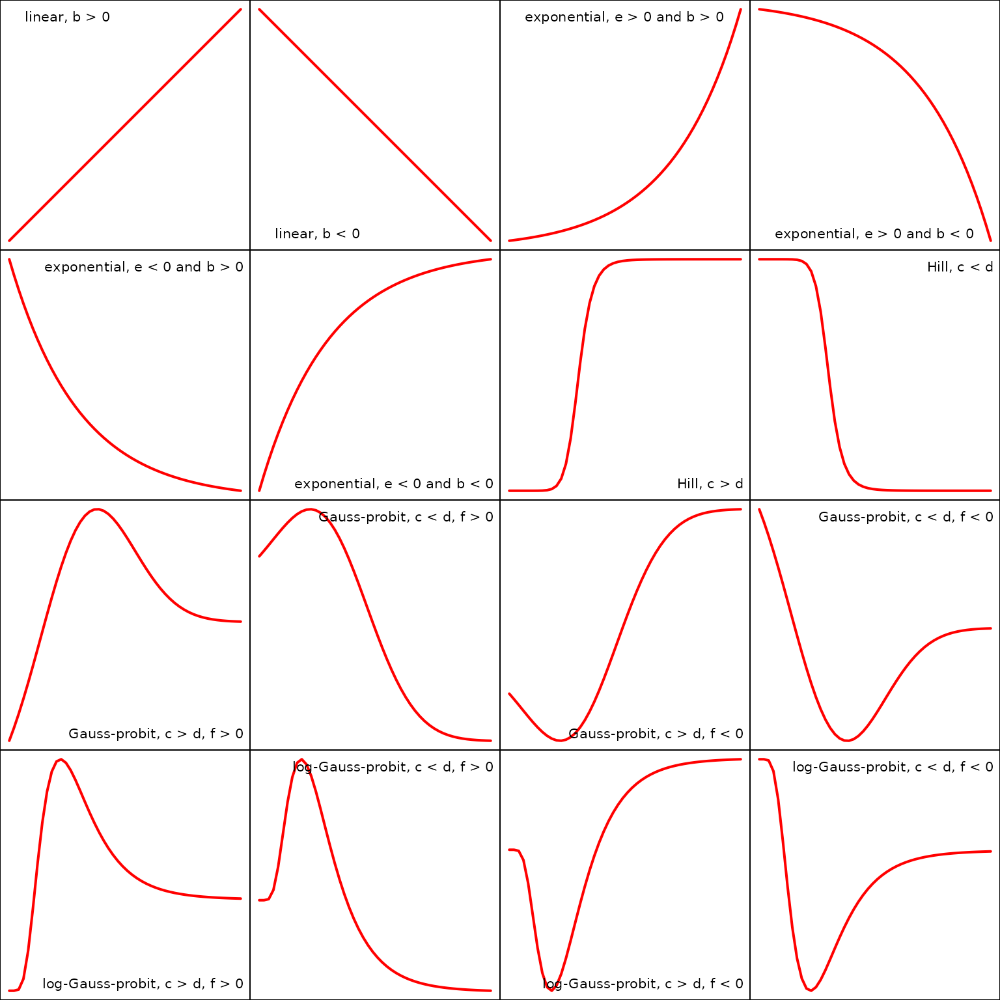

Overview of the DRomics package
Marie Laure Delignette-Muller, Aurélie Siberchicot, Elise Billoir, Floriane Larras
2024-05-13
Source:vignettes/DRomics_vignette.Rmd
DRomics_vignette.Rmd1 Introduction
DRomics is a freely available tool for dose-response (or concentration-response) characterization from omics data. It is especially dedicated to omics data obtained using a typical dose-response design, favoring a great number of tested doses (or concentrations) rather than a great number of replicates (no need of replicates to use DRomics).
After a first step which consists in importing, checking and if needed normalizing/transforming the data (step 1), the aim of the proposed workflow is to select monotonic and/or biphasic significantly responsive items (e.g. probes, contigs, metabolites) (step 2), to choose the best-fit model among a predefined family of monotonic and biphasic models to describe the response of each selected item (step 3), and to derive a benchmark dose or concentration from each fitted curve (step 4). Those steps can be performed in R using DRomics functions, or using the shiny application named DRomics-shiny.
In the available version, DRomics supports single-channel microarray data (in log2 scale), RNAseq data (in raw counts) and other continuous omics data (in log scale), such as metabolomics data calculated from AUC values (area under the curve), or proteomics data when expressed as protein abundance from peak intensity values. Proteomics data expressed in spectral counts could be analyzed as RNAseq data using raw counts after carefully checking the validity of the assumptions made in processing the RNAseq data. In order to link responses across biological levels based on a common method, DRomics also handles continuous apical data as long as they meet the use conditions of least squares regression (homoscedastic Gaussian regression, see the section on least squares for a reminder if needed).
As built in the environmental risk assessment context where omics data are more often collected on non-sequenced species or species communities, DRomics does not provide an annotation pipeline. The annotation of items selected by DRomics may be complex in this context, and must be done outside DRomics using databases such as KEGG or Gene Ontology. DRomics functions can then be used to help the interpretation of the workflow results in view of the biological annotation. It enables a multi-omics approach, with the comparison of the responses at the different levels of organization (in view of a common biological annotation). It can also be used to compare the responses at one organization level, but measured under different experimental conditions (e.g. different time points). This interpretation can be performed in R using DRomics functions, or using a second shiny application DRomicsInterpreter-shiny.
This vignette is intended to help users to start using the DRomics package. It is complementary to the reference manual where you can find more details on each function of the package. The first part of this vignette (Main workflow, steps 1 to 4) could also help users of the first shiny application DRomics-shiny. The second part (Help for biological interpretation of DRomics outputs) could also help users of the second shiny application DRomicsInterpreter-shiny.
Both shiny applications can be used locally in your R session after installation of the package and of some required shiny tools (see below and on the DRomics web page is you need some more help to install the package: https://lbbe.univ-lyon1.fr/fr/dromics)
# Installation of required shiny packages
install.packages(c("shiny", "shinyBS", "shinycssloaders", "shinyjs", "shinyWidgets", "sortable"))
# Launch of the first shiny application DRomics-shiny
shiny::runApp(system.file("DRomics-shiny", package = "DRomics"))
# Launch of the second shiny application DRomicsInterpreter-shiny
shiny::runApp(system.file("DRomicsInterpreter-shiny", package = "DRomics"))If you do not want to install the package on your computer, you can also launch the two shiny applications from the shiny server of our lab, respectively at https://lbbe-shiny.univ-lyon1.fr/DRomics/inst/DRomics-shiny/ and https://lbbe-shiny.univ-lyon1.fr/DRomics/inst/DRomicsInterpreter-shiny/.
If you do not want to use R functions and prefer to use the shiny applications, locally on your computer or from our shiny server, you can skip the pieces of code and focus on the explanations and on the outputs that are also given in the shiny applications. And if one day you want go further using the R functions, we recommend you to start from the whole R code corresponding to your analysis that is provided on the last page of each of the two shiny applications.
2 Main workflow
2.1 Step 1: importation, check and normalization / transformation of data if needed
2.1.1 General format of imported data
2.1.1.1 Importation of data from a unique text file
Whatever the type of data imported in DRomics (e.g. RNAseq, microarray, metabolomic data), data can be imported from a .txt file (e.g. “mydata.txt”) organized with one row per item (e.g. transcript, probe, metabolite) and one column per sample. In an additional first row, after a name for the item identifier (e.g. “id”), we must have the tested doses or concentrations in a numeric format for the corresponding sample (for example, if there are triplicates for each treatment, the first line could be “item”, 0, 0, 0, 0.1, 0.1, 0.1, etc.). An additional first column must give the identifier of each item (identifier of the probe, transcript, metabolite, …, or name of the endpoint for anchoring data), and the other columns give the responses of the item for each sample. This file will be imported within DRomics using an internal call to the function read.table() with its default field separator (sep argument) and its default decimal separator (dec argument at “.”). So remember, if necessary, to transform another decimal separator (e.g. “,”) in “.” before importing your data.
Different examples of .txt files formatted for the DRomics workflow
are available in the package, such as the one named “RNAseq_sample.txt”.
You can have a look of how the data are coded in this file using the
following code. To use a local dataset formatted in the same
way, such use a datafilename of type
"yourchosenname.txt".
# Import the text file just to see what will be automatically imported
datafilename <- system.file("extdata", "RNAseq_sample.txt", package = "DRomics")
# datafilename <- "yourchosenname.txt" # for a local file
# Have a look of what information is coded in this file
d <- read.table(file = datafilename, header = FALSE)
nrow(d)## [1] 1000
head(d)## V1 V2 V3 V4 V5 V6 V7 V8 V9 V10
## 1 RefSeq 0 0 0.22 0.22 0.22 0.67 0.67 0.67 2
## 2 NM_144958 2072 2506 2519.00 2116.00 1999.00 2113.00 2219.00 2322.00 2359
## 3 NR_102758 0 0 0.00 0.00 0.00 0.00 0.00 0.00 0
## 4 NM_172405 198 265 250.00 245.00 212.00 206.00 227.00 246.00 265
## 5 NM_029777 18 29 25.00 19.00 19.00 13.00 22.00 19.00 19
## 6 NM_001130188 0 0 0.00 0.00 0.00 0.00 0.00 1.00 0
## V11 V12 V13 V14 V15
## 1 2 2 6 6 6
## 2 1932 1705 2110 2311 2140
## 3 0 0 0 0 0
## 4 205 175 288 315 242
## 5 26 16 26 32 33
## 6 0 0 1 0 12.1.1.2 Importation of data as an R object
Alternatively an R object of class data.frame can be directly given in input, that corresponds to the output of read.table(file, header = FALSE) on a file described in the previous section.
You can see below an example of an RNAseq data set that is available in DRomics as an R object (named Zhou_kidney_pce) and which is an extended version (more rows) of the previous dataset coded in “RNAseq_sample.txt”.
# Load and look at the dataset directly coded as an R object
data(Zhou_kidney_pce)
nrow(Zhou_kidney_pce)## [1] 33395
head(Zhou_kidney_pce)## V1 V2 V3 V4 V5 V6 V7 V8 V9 V10
## 1 RefSeq 0 0 0.22 0.22 0.22 0.67 0.67 0.67 2
## 2 NM_144958 2072 2506 2519.00 2116.00 1999.00 2113.00 2219.00 2322.00 2359
## 3 NR_102758 0 0 0.00 0.00 0.00 0.00 0.00 0.00 0
## 4 NM_172405 198 265 250.00 245.00 212.00 206.00 227.00 246.00 265
## 5 NM_029777 18 29 25.00 19.00 19.00 13.00 22.00 19.00 19
## 6 NM_001130188 0 0 0.00 0.00 0.00 0.00 0.00 1.00 0
## V11 V12 V13 V14 V15
## 1 2 2 6 6 6
## 2 1932 1705 2110 2311 2140
## 3 0 0 0 0 0
## 4 205 175 288 315 242
## 5 26 16 26 32 33
## 6 0 0 1 0 1If your data are already imported in R in a different format as the one described above, you can use the formatdata4DRomics() function to build an R object directly useable by the DRomics workflow. formatdata4DRomics() needs two arguments in input:
- the matrix of the data with one row for each item and one column for each sample,
- and the numeric vector coding for the dose for each sample.
The names of the samples can be added in a third optional argument (see ?formatdata4DRomics for details). Below is an example using a RNAseq dataset of the package coded as an R object named zebraf.
## List of 3
## $ counts: int [1:1000, 1:16] 453 331 897 12 326 533 1948 904 583 154 ...
## ..- attr(*, "dimnames")=List of 2
## .. ..$ : chr [1:1000] "ENSDARG00000102141" "ENSDARG00000102123" "ENSDARG00000114503" "ENSDARG00000115971" ...
## .. ..$ : chr [1:16] "I10_05mG_E5" "I10_05mG_E6" "I10_05mG_E7" "I10_C5" ...
## $ dose : num [1:16] 500 500 500 0 0 0 0 50000 50000 50000 ...
## $ batch : Factor w/ 2 levels "I10","I17": 1 1 1 1 1 1 1 2 2 2 ...
(samples <- colnames(zebraf$counts))## [1] "I10_05mG_E5" "I10_05mG_E6" "I10_05mG_E7" "I10_C5" "I10_C6"
## [6] "I10_C7" "I10_C8" "I17_50mG_E5" "I17_50mG_E6" "I17_50mG_E8"
## [11] "I17_5mG_E5" "I17_5mG_E7" "I17_5mG_E8" "I17_C5" "I17_C7"
## [16] "I17_C8"
# Formatting of data for use in DRomics
#
data4DRomics <- formatdata4DRomics(signalmatrix = zebraf$counts,
dose = zebraf$dose,
samplenames = samples)
# Look at the dataset coded as an R object
nrow(data4DRomics)## [1] 1001
head(data4DRomics)## I10_05mG_E5 I10_05mG_E6 I10_05mG_E7 I10_C5 I10_C6 I10_C7
## 1 item 500 500 500 0 0 0
## 2 ENSDARG00000102141 453 656 590 636 529 453
## 3 ENSDARG00000102123 331 505 401 465 488 430
## 4 ENSDARG00000114503 897 1055 1073 1017 1022 992
## 5 ENSDARG00000115971 12 23 24 21 40 32
## 6 ENSDARG00000098311 326 544 416 484 330 297
## I10_C8 I17_50mG_E5 I17_50mG_E6 I17_50mG_E8 I17_5mG_E5 I17_5mG_E7 I17_5mG_E8
## 1 0 50000 50000 50000 5000 5000 5000
## 2 566 790 557 1005 688 775 425
## 3 582 498 427 815 450 675 307
## 4 1124 1153 900 2115 1064 1555 824
## 5 30 22 14 34 19 36 21
## 6 396 502 380 1065 522 688 332
## I17_C5 I17_C7 I17_C8
## 1 0 0 0
## 2 719 516 667
## 3 522 475 541
## 4 1449 1152 1341
## 5 44 27 22
## 6 666 471 506Whatever the way you format your data, we strongly recommend you to carefully look at the following sections to check that you use the good scale for you data, which depends on the type of measured signal (counts of reads, fluorescence signal, …).
2.1.2 What types of data can be analyzed using DRomics ?
2.1.2.1 Description of the classical types of data handled by DRomics
DRomics offers the possibility to work on different types of omics data (see following subsections for their description) but also on continuous anchoring data. When working on omics data, all the lines of the data frame (except the first one coding for the doses or concentrations) correspond to the same type of data (e.g. raw counts for RNAseq data). When working on anchoring data, the different lines (except the first one coding for the doses or concentrations) correspond to different endpoints that may correspond to different types of data (e.g. biomass, length,..), but all are assumed continuous data compatible with a Gaussian (normal) error model (after transformation if needed, e.g. logarithmic transformation) for the selection and modeling steps (see the section on least squares if you need a reminder on the is condition).
Three types of omics data may be imported in DRomics using the following functions:
- RNAseqdata() should be used to import RNAseq as counts of reads (for details look at the example with RNAseq data),
- microarraydata() should be used to import single-channel microarray data in log2 scale (for details look at the example with microarray data),
- continuousomicdata() should be used to import other continuous omics data such as metabolomics data, or proteomics data (only when expressed in intensity),…, in a scale that enables the use of a Gaussian error model (for details look at the example with metabolomic omics data).
It is also possible to import in DRomics continuous anchoring data measured at the apical level, especially for sake of comparison of benchmark doses (see Step 4 for definition of BMD) estimated at different levels of organization but using the same metrics. Nevertheless, one should keep in mind that the DRomics workflow was optimized for an automatic analysis of high throughput omics data (especially implying a selection and modeling steps on high-dimensional data) and that other tools may be better suited for the sole analysis of apical dose-response data (for details look at the example with continuous apical data).
In Steps 1 and 2 count data are internally analysed using functions of the Bioconductor package DESeq2, continuous omics data (microarray data and other continuous omics data) are internally analysed using functions of the Bioconductor package limma and continuous anchoring data are internally analysed using the classical lm() function.
2.1.2.1.1 An example with RNAseq data
For RNAseq data, imperatively imported in raw counts
(if your counts come from Kallisto or Salmon put add the argument
round.counts = TRUE in order to round them), you have to
choose the transformation method used to stabilize the variance (“rlog”
or “vst”). In the example below “vst” was used to make this vignette
quick to compile, but “rlog” is recommended and chosen by
default even if more computer intensive than “vst” except when the
number of samples is very large (> 30) (as encountered for
in situ data for example: see ?RNAseqdata and the section dedicated to in situ data for
details on this point). Whatever the chosen method, data are
automatically normalized with respect to library size and transformed in
log2 scale.
RNAseqfilename <- system.file("extdata", "RNAseq_sample.txt", package = "DRomics")
# RNAseqfilename <- "yourchosenname.txt" # for a local file
(o.RNAseq <- RNAseqdata(RNAseqfilename, transfo.method = "vst"))## Elements of the experimental design in order to check the coding of the data:
## Tested doses and number of replicates for each dose:
##
## 0 0.22 0.67 2 6
## 2 3 3 3 3
## Number of items: 999
## Identifiers of the first 20 items:
## [1] "NM_144958" "NR_102758" "NM_172405" "NM_029777" "NM_001130188"
## [6] "NM_207141" "NM_001162368" "NM_008117" "NM_001168290" "NM_010910"
## [11] "NM_001004147" "NM_001146318" "NM_145597" "NM_001161797" "NM_021483"
## [16] "NR_002862" "NR_033520" "NM_134027" "NM_010381" "NM_019388"
## Data were normalized with respect to library size and tranformed using
## the following method: vst
plot(o.RNAseq, cex.main = 0.8, col = "green")
The plot of the output shows the distribution of the signal on all the contigs/genes, for each sample, before and after the normalization and transformation of data.
2.1.2.1.2 An example with microarray data
For single-channel microarray data, imperatively imported in log scale (classical and recommended log2 scale), you can choose between array normalization methods (“cyclicloess”, “quantile”, “scale” or “none”). In the example below, “quantile” was used to make this vignette quick to compile, but “cyclicloess” is recommended and chosen by default even if more computer intensive than the others (see ?microarraydata for details).
microarrayfilename <- system.file("extdata", "transcripto_sample.txt", package = "DRomics")
# microarrayfilename <- "yourchosenname.txt" # for a local file
(o.microarray <- microarraydata(microarrayfilename, norm.method = "quantile"))## Elements of the experimental design in order to check the coding of the data:
## Tested doses and number of replicates for each dose:
##
## 0 0.69 1.223 2.148 3.774 6.631
## 5 5 5 5 5 5
## Number of items: 1000
## Identifiers of the first 20 items:
## [1] "1" "2" "3" "4" "5.1" "5.2" "6.1" "6.2" "7.1" "7.2"
## [11] "8.1" "8.2" "9.1" "9.2" "10.1" "10.2" "11.1" "11.2" "12.1" "12.2"
## Data were normalized between arrays using the following method: quantile
plot(o.microarray, cex.main = 0.8, col = "green")
The plot of the output shows the distribution of the signal over all the probes, for each sample, before and after the normalization of data.
2.1.2.1.3 An example with metabolomic data
Neither normalization nor transformation is provided in the function continuousomicdata(). The pre-treatment of metabolomic data must be done before importation of data, and data must be imported in log scale, so that they can be directly modelled using a Gaussian (normal) error model. This strong hypothesis is required both for selection of items and for dose-reponse modeling (see the section on least squares for a reminder if needed). In the context of a multi-omics approach we recommend the use of a log2 transformation, instead of the classical log10 for such data, so as to facilitate the comparison of results obtained with transcriptomics data generally handled in a log2 scale.
For instance, a basic procedure for the pre-treatment of metabolomic data could follow the three steps described thereafter: i) removing of metabolites for which the proportion of missing data (non detected) across all the samples is too high (more than 20 to 50 percents according to your tolerance level); ii) retrieving of missing values data using half minimum method (i.e. half of the minimum value found for a metabolite across all samples); iii) log-transformation of values. If a scaling to the total intensity (normalization by sum of signals in each sample) or another normalization is necessary and pertinent, we recommend to do it before those three previously described steps.
metabolofilename <- system.file("extdata", "metabolo_sample.txt", package = "DRomics")
# metabolofilename <- "yourchosenname.txt" # for a local file
(o.metabolo <- continuousomicdata(metabolofilename))## Elements of the experimental design in order to check the coding of the data:
## Tested doses and number of replicates for each dose:
##
## 0 0.69 1.1 1.79 2.92 4.78 7.76
## 10 6 2 2 2 6 2
## Number of items: 109
## Identifiers of the first 20 items:
##
## [1] "P_2" "P_4" "P_5" "P_6" "P_7" "P_10" "P_11" "P_12" "P_14" "P_16"
## [11] "P_19" "P_21" "P_22" "P_26" "P_32" "P_34" "P_35" "P_36" "P_37" "P_38"
plot(o.metabolo, col = "green")
The plot of the output shows the distribution of the signal over all the metabolites, for each sample.
The deprecated metabolomicdata() function was renamed continuousomicdata() in the recent versions of the package (while keeping the first name available) to offer its use to other continuous omic data such as proteomics data (when expressed in intensity) or RT-qPCR data. As for metabolomic data, the pre-treatment of other continuous omic data must be done before importation, and data must be imported in a scale that enables the use of a Gaussian error model as this strong hypothesis is required both for selection of items and for dose-response modeling.
2.1.2.1.4 An example with continuous anchoring apical data
No transformation is provided in the function continuousanchoringdata(). If needed the pre-treatment of data must be done before importation of data, so that they can be directly modelled using a Gaussian error model. This strong hypothesis is required both for selection of responsive endpoints and for dose-reponse modeling (see the section on least squares for a reminder if needed).
anchoringfilename <- system.file("extdata", "apical_anchoring.txt", package = "DRomics")
# anchoringfilename <- "yourchosenname.txt" # for a local fileIn the following example the argument backgrounddose is used to specify that doses below or equal to 0.1 are considered as 0 in the DRomics workflow. Specifying this argument is necessary when there is no dose at 0 in the data (see section on in situ data for details on this point).
(o.anchoring <- continuousanchoringdata(anchoringfilename, backgrounddose = 0.1))## Elements of the experimental design in order to check the coding of the data:
## Tested doses and number of replicates for each dose:
##
## 0 2.4 3.8 6.2 10.1 16.5 26.8 43.5 70.7
## 12 6 2 2 2 6 2 2 2
## Number of endpoints: 2
## Names of the endpoints:
## [1] "growth" "photosynthesis"
For such data the plot() function simply provides a dose-response plot for each endpoint.
2.1.2.2 Handling of data collected through specific designs
The DRomics workflow was first developed for data collected through a typical dose-response experiment, with a reasonable number of tested doses (or concentrations - at least 4 in addition to the control and ideally 6 to 8) and a small number of replicates per dose. Recently we made some modifications in the package to make possible the use of designs with only 3 doses in addition to the control even if this type of design is not recommended for dose-response modeling.
We also extended our workflow to handle in situ (observational) data, for which there is no replication, as the dose (or concentration) is not controlled (see an example with in situ data for more details).
It is also now possible to handle experimental data collected using a design with a batch effect using DRomics together with functions from the Bioconductor package sva to correct for this batch effect before selection and modeling steps. We also developed the PCAplot() function to help visualizing this batch effect and the impact of the batch effect correction (BEC) on data (see an example with RNAseq data from an experiment with a batch effect for more details on how to handle such a case and see ?PCAplot for details on this specific function that could also be used to identify potential outlier samples).
2.1.2.2.1 An example with in situ (observational) RNAseq data
One of the problem that may occur in particular with in situ data, is the absence of real control samples, corresponding to a strictly null exposure dose or concentration. To prevent an hazardous calculation of the BMD (see Step 4 for definition of BMD) by extrapolation in such a case, one should use the argument backgrounddose to define the maximal measured dose that can be considered as a negligible dose. All doses below or equal to the value given in backgrounddose will be fixed at 0, so as to be considered at the background level of exposition.
For in situ data (and more generally for data with a very
large number of samples), the use of the rlog transformation in
RNAseqdata() is not recommended, both for speed reason and
because you are more likely to encounter a problem with the rlog
transformation in case of outliers in such a case (see https://support.bioconductor.org/p/105334/
for an explanation of the author of DESeq2
and if you want to see an example of problems that may appear with
outliers in that case, just force the transfo.method to
"rlog" in the following example).
datafilename <- system.file("extdata", "insitu_RNAseq_sample.txt", package="DRomics")
# Importation of data specifying that observed doses below the background dose
# fixed here to 2e-2 will be considered as null dose to have a control
(o.insitu <- RNAseqdata(datafilename, backgrounddose = 2e-2, transfo.method = "vst"))## Elements of the experimental design in order to check the coding of the data:
## Tested doses and number of replicates for each dose:
##
## 0 0.0205 0.0216 0.0248 0.0272 0.0322 0.0339 0.0387 0.0432 0.0463
## 25 1 1 1 1 1 1 1 1 1
## 0.04866 0.0528 0.0726 0.101 0.112 0.1122 0.167 2.089 2.474 2.892
## 1 1 3 1 1 1 1 1 1 1
## 2.899 2.904 3.008 3.16 3.199 3.251 3.323 3.483 3.604 4.484
## 1 1 1 1 1 1 1 1 1 1
## 4.917 4.924 5.509 8.53 9.16 9.38 9.5 9.83 10.35 11.06
## 1 1 1 1 1 1 1 1 1 1
## 11.34 11.94 12.11 12.39 13.51 14.8 16.26 16.89 18.2 18.28
## 1 1 1 1 1 1 1 1 1 1
## 19.14 20.62 20.7 21.13 23.0348 23.69 24.15 27.06 28.05 29.88
## 1 1 1 1 1 1 1 1 1 1
## 36.28
## 1
## Number of items: 1000
## Identifiers of the first 20 items:
## [1] "N00000000001_c0_g1" "N00000000002_c0_g1" "N00000000003_c0_g1"
## [4] "N00000000004_c0_g1" "N00000000005_c0_g1" "N00000000006_c0_g1"
## [7] "N00000000008_c0_g1" "N10000_c0_g1" "N10000_c0_g1.1"
## [10] "N10001_c0_g1" "N10008_c1_g1" "N10010_c0_g1"
## [13] "N10010_c1_g1" "N10011_c0_g1" "N10012_c0_g1"
## [16] "N100156_c0_g1" "N1001_c0_g1" "N10021_c0_g1"
## [19] "N10021_c0_g1.1" "N10021_c0_g1.2"
## Data were normalized with respect to library size and tranformed using
## the following method: vst
plot(o.insitu)
The plot of the output shows the distribution of the signal on all the contigs, for each sample (here the box plots are stuck to each other due to the large number of samples), before and after the normalization and transformation of data.
2.1.2.2.2 An example with RNAseq data from an experiment with a batch effect
When omics data are collected through a design with a known potential batch effect, the DRomics function PCAplot() can be used as in the example below to visualize the impact of this batch effect on the data. If it seems necessary, functions from specific packages can then be used to perform batch effect correction (BEC). We recommend the use of functions ComBat() and ComBat_seq() from the Bioconductor sva package for this purpose, respectively for microarray (or other continuous omic data) and RNAseq data.
As sva is a Bioconductor package, it must be installed in the same way as DESeq2 and limma previously to be loaded. If needed look at the DRomics web page to get the good instruction to install Bioconductor packages: https://lbbe.univ-lyon1.fr/fr/dromics).
Below is an example using ComBat-seq() on RNAseq data with batch effect. As the sva package does not import the RNAseq data in the same format as DRomics, it is necessary to use the DRomics function formatdata4DRomics() to interoperate between ComBat-seq in DRomics functions (see the section on importation as an R object for details on this function or ?formatdata4DRomics).
## List of 3
## $ counts: int [1:1000, 1:16] 453 331 897 12 326 533 1948 904 583 154 ...
## ..- attr(*, "dimnames")=List of 2
## .. ..$ : chr [1:1000] "ENSDARG00000102141" "ENSDARG00000102123" "ENSDARG00000114503" "ENSDARG00000115971" ...
## .. ..$ : chr [1:16] "I10_05mG_E5" "I10_05mG_E6" "I10_05mG_E7" "I10_C5" ...
## $ dose : num [1:16] 500 500 500 0 0 0 0 50000 50000 50000 ...
## $ batch : Factor w/ 2 levels "I10","I17": 1 1 1 1 1 1 1 2 2 2 ...
# Look at the design of this dataset
xtabs(~ zebraf$dose + zebraf$batch)## zebraf$batch
## zebraf$dose I10 I17
## 0 4 3
## 500 3 0
## 5000 0 3
## 50000 0 3It appears in this design that the data were obtained using to batches, with only the controlled condition (null dose) appearing in both batches.
# Formating of data using the formatdata4DRomics() function
data4DRomics <- formatdata4DRomics(signalmatrix = zebraf$counts,
dose = zebraf$dose)
# Importation of data just to use DRomics functions
# As only raw data will be given to ComBat_seq after
(o <- RNAseqdata(data4DRomics))## Just wait, the transformation using regularized logarithm (rlog) may
## take a few minutes.## Elements of the experimental design in order to check the coding of the data:
## Tested doses and number of replicates for each dose:
##
## 0 500 5000 50000
## 7 3 3 3
## Number of items: 1000
## Identifiers of the first 20 items:
## [1] "ENSDARG00000102141" "ENSDARG00000102123" "ENSDARG00000114503"
## [4] "ENSDARG00000115971" "ENSDARG00000098311" "ENSDARG00000104839"
## [7] "ENSDARG00000100143" "ENSDARG00000102474" "ENSDARG00000104049"
## [10] "ENSDARG00000102226" "ENSDARG00000103095" "ENSDARG00000102128"
## [13] "ENSDARG00000110470" "ENSDARG00000100422" "ENSDARG00000104632"
## [16] "ENSDARG00000100660" "ENSDARG00000113107" "ENSDARG00000099787"
## [19] "ENSDARG00000112451" "ENSDARG00000070546"
## Data were normalized with respect to library size and tranformed using
## the following method: rlog
# PCA plot with the sample labels
PCAdataplot(o, label = TRUE) + theme_bw()
# PCA plot to visualize the batch effect
PCAdataplot(o, batch = zebraf$batch) + theme_bw()
The PCA plot shows an impact of the batch effect, that clearly appears on controls (red points) which were obtained on two different batches.
# Batch effect correction using ComBat_seq{sva}
require(sva)
BECcounts <- ComBat_seq(as.matrix(o$raw.counts),
batch = as.factor(zebraf$batch),
group = as.factor(o$dose))
# Formating of data after batch effect correction
BECdata4DRomics <- formatdata4DRomics(signalmatrix = BECcounts,
dose = o$dose)
o.BEC <- RNAseqdata(BECdata4DRomics)## Just wait, the transformation using regularized logarithm (rlog) may
## take a few minutes.
# PCA plot after batch effect correction
PCAdataplot(o.BEC, batch = zebraf$batch) + theme_bw()
The PCA plot after BEC shows the impact of the correction on the batch effect that is no more visible on controls (red points).
2.2 Step 2: selection of significantly responding items
For the second step of the workflow, the function itemselect() must be used simply taking as input in a first argument the output of the function used in step 1 (output of RNAseqdata(), microarraydata(), continuousomicdata() or continuousanchoringdata()). Below is an example with microarray data.
(s_quad <- itemselect(o.microarray, select.method = "quadratic", FDR = 0.01))## Number of selected items using a quadratic trend test with an FDR of 0.01: 150
## Identifiers of the first 20 most responsive items:
## [1] "383.2" "384.2" "363.1" "383.1" "384.1" "363.2" "364.2" "364.1" "300.2"
## [10] "301.1" "300.1" "301.2" "263.2" "27.2" "25.1" "368.1" "351.1" "15"
## [19] "370" "350.2"The false discovery rate (FDR) corresponds to the expected proportion of items that will be falsely detected as responsive. With a very large data set it is important to define a selection step based on an FDR not only to reduce the number of items to be further processed, but also to remove too noisy dose-response signals that may impair the quality of the results. We recommend to set a value between 0.001 and 0.1 depending of the initial number of items. When this number is very high (more than several tens of thousands), we recommend a FDR less than 0.05 (0.001 to 0.01) to increase the robustness of the results (Larras et al. 2018).
Concerning the method used for selection, we recommend the default choice (“quadratic”) for a typical omics dose-response design (many doses/concentrations with few replicates per condition). It enables the selection of both monotonic and biphasic dose-response relationships. If you want to focus on monotonic dose-response relationships, the “linear” method could be chosen. For a design with a small number of doses/concentrations and many replicates (not optimal for dose-response modeling), the “ANOVA” method could be preferable. For in situ data (observational data without replicates due to uncontrolled dose), only trend tests will be proposed as the use of an ANOVA test in absence of replicates for some conditions is not reasonable.
Each of the three methods proposed for this selection step is based on the use of a simple model (quadratic,linear or ANOVA-type) linking the signal to the dose in a rank scale. This model is internally fitted to data by an empirical Bayesian approach using the respective packages DESeq2 and limma for RNAseq data and microarray or continuous omics data, and by classical linear regression using the lm() function for continuous anchoring data. The adjustment of p-values according to the specified FDR is performed in any case, even for continuous anchoring data, so as to ensure the unicity of the workflow independently of the type of data.
See ?itemselect for more details and Larras et al. 2018 comparison of the three proposed methods on an example.
It is easy, using for example the package VennDiagram, to compare the selection of items obtained using two different methods, as in the following example.
require(VennDiagram)
s_lin <- itemselect(o.microarray, select.method = "linear", FDR = 0.01)
index_quad <- s_quad$selectindex
index_lin <- s_lin$selectindex
plot(c(0,0), c(1,1), type = "n", xaxt = "n", yaxt = "n", bty = "n", xlab = "", ylab = "")
draw.pairwise.venn(area1 = length(index_quad), area2 = length(index_lin),
cross.area = length(which(index_quad %in% index_lin)),
category = c("quadratic trend test", "linear trend test"),
cat.col=c("cyan3", "darkorange1"), col=c("black", "black"),
fill = c("cyan3", "darkorange1"), lty = "blank", cat.pos = c(1,11))
2.3 Step 3: fit of dose-response models, choice of the best fit for each curve
2.3.1 Fit of the best model
For Step 3 the function drcfit() simply takes as input in a first argument the output of itemselect(). For each item selected in Step 2, the model that best fits the dose-response data is chosen among a family of five simple models built to describe a wide variety of monotonic and biphasic dose-response curves (DRC) (and exclusively monotonic and biphasic curves : it is why more flexible models such as polynomial third and fourth order classical polynomial models were deliberately not considered). For a complete description of those models see the last section of Step 3 or Larras et al. 2018.
The procedure used to select the best fit is based on an information criterion as described in Larras et al. 2018 and in ?drcfit. The classical and former default option of the AIC (Akaike criterion - default information criterion used in DRomics versions < 2.2-0) was replaced by the default use of the AICc (second-order Akaike criterion) in order to prevent the overfitting that may occur with dose-response designs with a small number of data points, as recommended and now classically done in regression (Hurvich and Tsai, 1989; Burnham and Anderson DR, 2004).
As the call to the drcfit() function may take time when the number of pre-selected items is large, by default a progressbar is provided. Some arguments of this function can be used to specify parallel computing to accelerate the computation (see ?drcfit for details).
(f <- drcfit(s_quad, progressbar = FALSE))## Results of the fitting using the AICc to select the best fit model
## 22 dose-response curves out of 150 previously selected were removed
## because no model could be fitted reliably.
## Distribution of the chosen models among the 128 fitted dose-response curves:
##
## Hill linear exponential Gauss-probit
## 2 29 39 49
## log-Gauss-probit
## 9
## Distribution of the trends (curve shapes) among the 128 fitted dose-response curves:
##
## bell dec inc U
## 38 37 34 19In the following you can see the first lines of the output data frame on our example (see ?drcfit for a complete description of the columns of the output data frame.) This output data frame provides information for each item, such as the best-fit model, its parameter values, the standard residual error (SDres) (see the section on least squares for his definition), coordinates of particular points, and the trend of the curve (among increasing, decreasing, U-shaped, bell-shaped).
An extensive description of the outputs of the complete DRomics workflow is provided in the last section of the main workflow. Note that the number of items successfully fitted (output of Step 3) is often smaller that the number of items selected in Step 2, as for some of the selected items, all models may fail to converge or fail to significantly better describe the data than the constant model.
head(f$fitres)## id irow adjpvalue model nbpar b c d e f SDres
## 1 383.2 725 2.08e-07 Gauss-probit 4 5.5836 8.58 8.58 1.70 3.62 0.157
## 2 384.2 727 2.08e-07 exponential 3 -0.0298 NA 12.24 1.76 NA 0.160
## 3 363.1 686 2.24e-07 exponential 3 -0.2058 NA 9.10 3.11 NA 0.218
## 4 383.1 724 2.24e-07 Gauss-probit 4 5.4879 8.75 8.75 1.72 3.58 0.169
## 5 384.1 726 3.41e-07 Gauss-probit 4 6.8453 7.26 7.26 1.77 5.01 0.158
## 6 363.2 687 7.01e-07 exponential 3 -0.1467 NA 9.10 2.77 NA 0.206
## typology trend y0 yatdosemax yrange maxychange xextrem yextrem
## 1 GP.bell bell 12.0 11.03 1.17 1.004 1.70 12.2
## 2 E.dec.concave dec 12.2 10.99 1.25 1.251 NA NA
## 3 E.dec.concave dec 9.1 7.58 1.53 1.527 NA NA
## 4 GP.bell bell 12.2 11.15 1.18 1.012 1.72 12.3
## 5 GP.bell bell 12.1 11.15 1.11 0.949 1.77 12.3
## 6 E.dec.concave dec 9.1 7.64 1.46 1.461 NA NA2.3.2 Plot of fitted curves
By default the plot() function used on the output of the drcfit() function provides the first 20 fitted curves (or the ones you specify using the argument items) with observed points. Fitted curves are represented in red, replicates are represented in open circles and means of replicates at each dose/concentration are represented by solid circles. All the fitted curves may be saved in a pdf file using the plotfit2pdf() function (see ?drcfit).
plot(f) 
The fitted curves are by default represented using a log
scale for dose/concentration, which is more suited in common
cases where the range of observed doses/concentrations is very wide
and/or where tested doses/concentrations are obtained by dilutions. Use
dose_log_transfo = FALSE to use the raw scale of doses (see
?drcfit for details and examples). It is why the observations at the
control appear differently as the other observations, as half circles on
the y-axis, to remind that their true value is minus infinity in a log
scale.
Another specific plot function named targetplot() can be used to plot targeted items, whether they were or not selected in step 2 and fitted in step 3. See an example below and details in ?targetplot
targetitems <- c("88.1", "1", "3", "15")
targetplot(targetitems, f = f)
2.3.3 Plot of residuals
To check the assumption of the Gaussian error model
(see the section on least squares), two
types of residual plots can be used, "dose_residuals" for
plot of residuals against the observed doses/concentrations, or
"fitted_residuals" for plot of residuals against fitted
values of the modeled signal. The residual plots for all items may also
be saved in a pdf file using the plotfit2pdf() function (see
?drcfit).
plot(f, plot.type = "dose_residuals")
2.3.4 Description of the family of dose-response models fitted in DRomics
The best fit model is chosen among the five following models describing the observed signal \(y\) as a function of \(x\) the dose (or concentration):
- the linear model: \[y = d + b \times x\] with 2 parameters, \(b\) the slope and \(d\) the mean signal at control.
- the exponential model: \[y = d + b \times
\left(exp\left(\frac{x}{e}\right)-1\right)\] with 3
parameters,
\(b\) a shape parameter, \(d\) the mean signal at control, \(e\) a shape parameter.- When \(e>0\) the dose response curve - DRC - is increasing if \(b>0\) and decreasing if \(b<0\), with no asymptote for high doses.
- When \(e<0\) the DRC is increasing if \(b<0\) and decreasing if \(b>0\), with an asymptote at \(d-b\) for high doses.
- the Hill model: \[y = c
+ \frac{d-c}{1+(\frac{x}{e})^b}\] with 4
parameters,
\(b\) (\(>0\)) a shape parameter, \(c\) the asymtotic signal for high doses, \(d\) the mean signal at control, and \(e\) (\(>0\)) the dose at the inflection point of the sigmoid. - the Gauss-probit model built as the sum of a Gauss
and a probit part sharing the same parameters as defined below:\[y = f \times exp\left(-0.5
\left(\frac{x-e}{b}\right)^2\right) +d+(c-d) \times
\Phi\left(\frac{x-e}{b}\right)\] with 5
parameters,
\(b\) (\(>0\)) a shape parameter corresponding to the standard deviation of the Gauss part of the model, \(c\) the asymtotic signal for high doses, \(d\) the asymptotic signal on the left of the DRC (generally corresponding to a fictive negative dose), \(e\) (\(>0\)) a shape parameter corresponding to the mean of the Gauss part of the model, and \(f\) the amplitude and sign of the Gauss part of the model (the model is U-shaped if \(f<0\) and bell-shaped if \(f<0\)).
\(\Phi\) represents the cumulative distribution function (CDF) of the standard Gauss (also named normal or Gaussian) distribution.
This model encompasses two simplifed versions with 4 parameters, one monotonic (for \(f=0\)) and one with symmetrical asymptotes (for \(c=d\)). - the log-Gauss-probit model, a variant of the
previous one with on the log scale of the dose: \[y = f \times
exp\left(-0.5\left(\frac{ln(x)-ln(e)}{b}\right)^2\right)
+d+(c-d) \times \Phi\left(\frac{ln(x)-ln(e)}{b}\right)\]
with 5 parameters,
\(b\) (\(>0\)) a shape parameter corresponding to the standard deviation of the Gauss part of the model, \(c\) the asymtotic signal for high dose, \(d\) the asymptotic signal on the left of the DRC, reached at the control (for \(ln(x) = ln(0) = -\infty\)), \(ln(e)\) (\(>0\)) a shape parameter corresponding to the mean of the Gauss part of the model, and \(f\) the amplitude and sign of the Gauss part of the model (the model is U-shaped if \(f<0\) and bell-shaped if \(f<0\)).
\(\Phi\) represents the cumulative distribution function (CDF) of the standard Gauss distribution.
As the previous one, this model encompasses two simplifed versions with 4 parameters, one monotonic (for \(f=0\)) and one with symmetrical asymptotes (for \(c=d\)).
This family of five models was built to be able to describe a wide range of monotonic and biphasic DRC. In the following plot were represented typologies of curves that can be described using those models, depending of the definition of their parameters. In the following plot the curves are represented with the signal in y-axis and the raw dose in x-axis. As the range of tested or observed doses is often large, we decided to plot model fits by default using a log scale of doses. The shape of models will be transformed in this log x-scale, and especially the linear model will no more appear as a straight line as below.

2.3.5 Reminder on least squares regression
It is important when using DRomics to have in mind that the
dose-response models are fitted using the least squares
regression, assuming an additive Gaussian (normal)
error model for the observed signal. It is why the scale under
which you should import your data is very important: a log (or
pseudo-log) transformation may be necessary to meet the use conditions
of the model for some types of data.
Let us recall the formulation of the Gaussian model defining the signal
(after transformation if needed) \(y\)
as a function of the dose (or concentration) \(x\), \(f\)
being one of the five models previously described, and \(\theta\) the vector of its parameters (of
length 2 to 5).
\[y = f(x, \theta) + \epsilon\] with \[\epsilon \sim N(0, \sigma)\] \(N(0, \sigma)\) representing the Gaussian (normal) distribution of mean \(0\) and standard deviation (SD) \(\sigma\).
In this model, the residual standard deviation \(\sigma\) is assumed constant. It is the classical “homoscedasticity” hypothesis (see the following figure for an illustration). The examination of residuals (see the section on plot of residuals) is a good way to check that the error model is not strongly violated on your data.

2.4 Step 4: calculation of benchmark doses (BMD)
2.4.1 Calculation of BMD
The two types of benchmark doses (BMD-zSD and BMD-xfold) proposed by the EFSA (2017) are systematically calculated for each fitted dose-response curve using the function bmdcalc() with the output of the drcfit() function as a first argument, but we strongly recommend the use of the first one (BMD-zSD) for reasons explained in Larras et al. 2018 (see ?bmdcalc for details on this function).
(r <- bmdcalc(f, z = 1, x = 10))## 1 BMD-xfold values and 0 BMD-zSD values are not defined (coded NaN as
## the BMR stands outside the range of response values defined by the model).
## 60 BMD-xfold values and 0 BMD-zSD values could not be calculated (coded
## NA as the BMR stands within the range of response values defined by the
## model but outside the range of tested doses).For the recommended BMD-zSD,the argument \(z\), by default at 1, is used to define the BMD-zSD as the dose at which the response is reaching the BMR (benchmark response) defined as \[BMR = y_0 \pm z \times SD\] with \(y_0\) the level at the control given by the dose-response fitted model and \(SD\) the residual standard deviation of the dose-response fitted model (also named \(\sigma\) in the previous mathematical definition of the Gaussian model).
For the less recommended BMD-xfold, the argument \(x\), by default at 10 (for 10%), is used to define the BMD-xfold as the dose at which the response is reaching the BMR defined as \(BMR = y_0 \pm \frac{x}{100} \times y_0\). So this second BMD version does not take into account the residual standard deviation, and is strongly dependent of the magnitude of \(y_0\), which may be a problem if the signal at the control is close to 0, which is not rare on omics data that are classically handled on log scale.
In the following you can see the first lines of the output data frame
of the function bmdcalc() on our example. BMD values are coded
NA when the BMR stands within the range of response values
defined by the model but outside the range of tested doses, and
NaN when the BMR stands outside the range of response
values defined by the model due to asymptotes.
Very low BMD values obtained by extrapolation between 0 and the smallest
non null tested dose, that correspond to very sensitive items (that we
do not want to exclude), are thresholded at minBMD, an argument by
default fixed at the smallest non null tested dose divided by 100, but
that can be fixed by the user as what he considers to be a negligible
dose.
An extensive description of the outputs of the complete DRomics workflow is provided in the last section of the main workflow. You can also see ?bmdcalc for a complete description of its arguments and of the columns of its output data frame.
head(r$res)## id irow adjpvalue model nbpar b c d e f SDres
## 1 383.2 725 2.08e-07 Gauss-probit 4 5.5836 8.58 8.58 1.70 3.62 0.157
## 2 384.2 727 2.08e-07 exponential 3 -0.0298 NA 12.24 1.76 NA 0.160
## 3 363.1 686 2.24e-07 exponential 3 -0.2058 NA 9.10 3.11 NA 0.218
## 4 383.1 724 2.24e-07 Gauss-probit 4 5.4879 8.75 8.75 1.72 3.58 0.169
## 5 384.1 726 3.41e-07 Gauss-probit 4 6.8453 7.26 7.26 1.77 5.01 0.158
## 6 363.2 687 7.01e-07 exponential 3 -0.1467 NA 9.10 2.77 NA 0.206
## typology trend y0 yatdosemax yrange maxychange xextrem yextrem BMD.zSD
## 1 GP.bell bell 12.0 11.03 1.17 1.004 1.70 12.2 1.33
## 2 E.dec.concave dec 12.2 10.99 1.25 1.251 NA NA 3.26
## 3 E.dec.concave dec 9.1 7.58 1.53 1.527 NA NA 2.25
## 4 GP.bell bell 12.2 11.15 1.18 1.012 1.72 12.3 1.52
## 5 GP.bell bell 12.1 11.15 1.11 0.949 1.77 12.3 1.41
## 6 E.dec.concave dec 9.1 7.64 1.46 1.461 NA NA 2.43
## BMR.zSD BMD.xfold BMR.xfold
## 1 12.19 NA 10.83
## 2 12.08 6.59 11.02
## 3 8.89 5.26 8.19
## 4 12.33 NA 10.95
## 5 12.26 NA 10.89
## 6 8.90 5.47 8.192.4.2 Plots of the BMD distribution
The default plot of the output of the bmdcalc() function provides the distribution of benchmark doses as an ECDF (Empirical Cumulative Density Function) plot for the chosen BMD (“zSD”” or “xfold”). See an example below.

Different alternative plots are proposed (see ?bmdcalc for details) that can be obtained using the argument plottype to choose the type of plot (“ecdf”, “hist” or “density”) and the argument by to split the plot for example by “trend”. You can also use the bmdplot() function to make an ECDF plot of BMDs and personalize it (see ?bmdplot for details).
On a BMD ECDF plot one can add a color gradient for each
item coding for the intensity of the signal
(after shift of the control signal at 0) as a function of the dose (see
?bmdplotwithgradient for details and an example below). It is generally
necessary to use the argument line.size to manually adjust the width of
lines in that plot as the default value does not always give a
satisfactory resut. It is also recommended (but not mandatory but it is
the default option for the argument scaling) to scale the
signal in order to focus on the shape of the dose-reponse curves and not
on the amplitude of the signal change.
bmdplotwithgradient(r$res, BMDtype = "zSD",
facetby = "trend",
shapeby = "model",
line.size = 1.2,
scaling = TRUE) 
2.4.3 Calculation of confidence intervals on the BMDs by bootstrap
Confidence intervals on BMD values can be calculated by bootstrap. As the call to this function may take much time, by default a progressbar is provided and some arguments can be used to specify parallel computing to accelerate the computation (see ?bmdboot for details).
In the example below, a small number of iterations was used just to make this vignette quick to compile, but the default value of the argument niter (1000) should be considered as a minimal value to obtain stable results.
(b <- bmdboot(r, niter = 50, progressbar = FALSE))## Bootstrap confidence interval computation failed on 17 items among 128
## due to lack of convergence of the model fit for a fraction of the
## bootstrapped samples greater than 0.5.
## For 4 BMD.zSD values and 68 BMD.xfold values among 128 at least one
## bound of the 95 percent confidence interval could not be computed due
## to some bootstrapped BMD values not reachable due to model asymptotes
## or reached outside the range of tested doses (bounds coded Inf)).This function gives an output corresponding to the output of the bmdcalc() function completed with bounds of BMD confidence intervals (by default 95% confidence intervals) and the number of bootstrap iterations for which the model was successfully fitted to the data. An extensive description of the outputs of the complete DRomics workflow is provided in the last section of the main workflow.
head(b$res)## id irow adjpvalue model nbpar b c d e f SDres
## 1 383.2 725 2.08e-07 Gauss-probit 4 5.5836 8.58 8.58 1.70 3.62 0.157
## 2 384.2 727 2.08e-07 exponential 3 -0.0298 NA 12.24 1.76 NA 0.160
## 3 363.1 686 2.24e-07 exponential 3 -0.2058 NA 9.10 3.11 NA 0.218
## 4 383.1 724 2.24e-07 Gauss-probit 4 5.4879 8.75 8.75 1.72 3.58 0.169
## 5 384.1 726 3.41e-07 Gauss-probit 4 6.8453 7.26 7.26 1.77 5.01 0.158
## 6 363.2 687 7.01e-07 exponential 3 -0.1467 NA 9.10 2.77 NA 0.206
## typology trend y0 yatdosemax yrange maxychange xextrem yextrem BMD.zSD
## 1 GP.bell bell 12.0 11.03 1.17 1.004 1.70 12.2 1.33
## 2 E.dec.concave dec 12.2 10.99 1.25 1.251 NA NA 3.26
## 3 E.dec.concave dec 9.1 7.58 1.53 1.527 NA NA 2.25
## 4 GP.bell bell 12.2 11.15 1.18 1.012 1.72 12.3 1.52
## 5 GP.bell bell 12.1 11.15 1.11 0.949 1.77 12.3 1.41
## 6 E.dec.concave dec 9.1 7.64 1.46 1.461 NA NA 2.43
## BMR.zSD BMD.xfold BMR.xfold BMD.zSD.lower BMD.zSD.upper BMD.xfold.lower
## 1 12.19 NA 10.83 0.489 3.93 Inf
## 2 12.08 6.59 11.02 1.724 4.58 6.40
## 3 8.89 5.26 8.19 1.366 3.52 4.61
## 4 12.33 NA 10.95 0.423 4.17 Inf
## 5 12.26 NA 10.89 0.481 4.36 Inf
## 6 8.90 5.47 8.19 1.334 3.31 4.75
## BMD.xfold.upper nboot.successful
## 1 Inf 36
## 2 Inf 47
## 3 5.96 50
## 4 Inf 36
## 5 Inf 26
## 6 6.00 50The plot() function applied on the output of the bmdboot() function gives an ECDF plot of the chosen BMD with the confidence interval of each BMD (see ?bmdcalc for examples). By default BMDs with an infinite confidence interval bound are not plotted.
2.4.4 Filtering BMDs according to estimation quality
Using the bmdfilter() function, it is possible to use one of the three filters proposed to retain only the items associated to the best estimated BMD values.
- By default are retained only the items for which the BMD and its
confidence interval are defined (using
"CIdefined") (so excluding items for which the bootstrap procedure failed). - One can be even more restrictive by retaining items only if the BMD
confidence interval is within the range of tested/observed doses (using
"CIfinite"), - or less restrictive (using
"BMDdefined") requiring that the BMD point estimate only must be defined within the range of tested/observed doses.
Let us recall that in the bmdcalc() output, if it is not
the case the BMD is coded NA or NaN.
Below is an example of application of the different filters based on BMD-xfold values, chosen just to better illustrate the way filters work, as there far more bad BMD-xfold estimations than bad BMD-zSD estimations.
# Plot of BMDs with no filtering
subres <- bmdfilter(b$res, BMDfilter = "none")
bmdplot(subres, BMDtype = "xfold", point.size = 2, point.alpha = 0.4,
add.CI = TRUE, line.size = 0.4) + theme_bw()
# Plot of items with defined BMD point estimate
subres <- bmdfilter(b$res, BMDtype = "xfold", BMDfilter = "definedBMD")
bmdplot(subres, BMDtype = "xfold", point.size = 2, point.alpha = 0.4,
add.CI = TRUE, line.size = 0.4) + theme_bw()
# Plot of items with defined BMD point estimate and CI bounds
subres <- bmdfilter(b$res, BMDtype = "xfold", BMDfilter = "definedCI")
bmdplot(subres, BMDtype = "xfold", point.size = 2, point.alpha = 0.4,
add.CI = TRUE, line.size = 0.4) + theme_bw()
# Plot of items with finite BMD point estimate and CI bounds
subres <- bmdfilter(b$res, BMDtype = "xfold", BMDfilter = "finiteCI")
bmdplot(subres, BMDtype = "xfold", point.size = 2, point.alpha = 0.4,
add.CI = TRUE, line.size = 0.4) + theme_bw()
2.4.5 Plot of fitted curves with BMD values and confidence intervals
It is possible to add the output of bmdcalc() (or of bmdboot()) in the argument BMDoutput of the plot() function of drcfit(), in order to add BMD values (when defined) as a vertical line on each fitted curve, and bounds of the confidence intervals (when successfully calculated) as two dashed lines. Horizontal dotted lines corresponding to the two BMR potential values will be also added. See an example below.
# If you do not want to add the confidence intervals just replace b
# the output of bmdboot() by r the output of bmdcalc()
plot(f, BMDoutput = b) 
All the fitted curves may also be saved in the same way in a pdf file using the plotfit2pdf() function (see ?drcfit).
2.4.6 Plot of all the fitted curves in one figure with points at BMD-BMR values
It is possible to use the curvesplot() function to plot all the
fitted curves in one figure and to add The use of the curvesplot()
function is more extensively described in the next parts and in the
corresponding help page. By default in this plot the curves are scaled
to focus on the shape of the dose-response and not on their amplitude
(add scaling = FALSE to see the curves without
scaling).
In the following plot we also added vertical lines corresponding to tested doses on the plot and add transparency to visualize the density of curves when shapes are similar (especially the case for linear shapes).
tested.doses <- unique(f$omicdata$dose)
g <- curvesplot(r$res, addBMD = TRUE, xmax = max(tested.doses), colorby = "trend",
line.size = 0.8, line.alpha = 0.3, point.size = 2, point.alpha = 0.6) +
geom_vline(xintercept = tested.doses, linetype = 2) + theme_bw()
print(g)
The use of the package plotly to make such a plot interactive can be interesting for example to get the identifiant of each curve or to choose what group of curves to eliminate or to focus on. You can try the following code to get an interactive version of the previous figure.
2.4.7 Description of the outputs of the complete DRomics workflow
The output of the complete DRomics workflow, given
in b$res with b being the output of bmdboot(),
or the output of bmdfilter(b$res) (see previous section for description of BMD filtering
options) is a data frame reporting the results
of the fit and BMD computation on each selected item sorted in
the ascending order of the adjusted p-values returned by the item
selection step.
str(b$res)## 'data.frame': 128 obs. of 28 variables:
## $ id : chr "383.2" "384.2" "363.1" "383.1" ...
## $ irow : int 725 727 686 724 726 687 689 688 568 569 ...
## $ adjpvalue : num 2.08e-07 2.08e-07 2.24e-07 2.24e-07 3.41e-07 ...
## $ model : Factor w/ 5 levels "Hill","linear",..: 4 3 3 4 4 3 3 3 3 3 ...
## $ nbpar : num 4 3 3 4 4 3 3 3 3 3 ...
## $ b : num 5.5836 -0.0298 -0.2058 5.4879 6.8453 ...
## $ c : num 8.58 NA NA 8.75 7.26 ...
## $ d : num 8.58 12.24 9.1 8.75 7.26 ...
## $ e : num 1.7 1.76 3.11 1.72 1.77 ...
## $ f : num 3.62 NA NA 3.58 5.01 ...
## $ SDres : num 0.157 0.16 0.218 0.169 0.158 ...
## $ typology : Factor w/ 12 levels "E.dec.concave",..: 5 1 1 5 5 1 1 1 2 2 ...
## $ trend : Factor w/ 4 levels "bell","dec","inc",..: 1 2 2 1 1 2 2 2 2 2 ...
## $ y0 : num 12 12.2 9.1 12.2 12.1 ...
## $ yatdosemax : num 11.03 10.99 7.58 11.15 11.15 ...
## $ yrange : num 1.17 1.25 1.53 1.18 1.11 ...
## $ maxychange : num 1.004 1.251 1.527 1.012 0.949 ...
## $ xextrem : num 1.7 NA NA 1.72 1.77 ...
## $ yextrem : num 12.2 NA NA 12.3 12.3 ...
## $ BMD.zSD : num 1.33 3.26 2.25 1.52 1.41 ...
## $ BMR.zSD : num 12.19 12.08 8.89 12.33 12.26 ...
## $ BMD.xfold : num NA 6.59 5.26 NA NA ...
## $ BMR.xfold : num 10.83 11.02 8.19 10.95 10.89 ...
## $ BMD.zSD.lower : num 0.489 1.724 1.366 0.423 0.481 ...
## $ BMD.zSD.upper : num 3.93 4.58 3.52 4.17 4.36 ...
## $ BMD.xfold.lower : num Inf 6.4 4.61 Inf Inf ...
## $ BMD.xfold.upper : num Inf Inf 5.96 Inf Inf ...
## $ nboot.successful: num 36 47 50 36 26 50 50 50 50 50 ...The columns of this data frame are:
- id: the item identifier
- irow: the row number in the initial dataset
- adjpvalue: the adjusted p-values returned by the item selection step
- model: the best model fitted
- nbpar: the number of parameters of this best model (that may be smaller than the maximal number of parameters of the model if a simplified version of it was chosen)
- b, c, d, e, and f, the model parameter values
- SDres: the residual standard deviation of the best model
- typology: the typology of the curve depending of the chosen model
and of its parameter values with 16 classes,
- “H.inc” for increasing Hill curves
- “H.dec” for decreasing Hill curves
- “L.inc” for increasing linear curves
- “L.dec” for decreasing linear curves
- “E.inc.convex” for increasing convex exponential curves
- “E.dec.concave” for decreasing concave exponential curves
- “E.inc.concave” for increasing concave exponential curves
- “E.dec.convex” for decreasing convex exponential curves
- “GP.U” for U-shape Gauss-probit curves
- “GP.bell” for bell-shape Gauss-probit curves
- “GP.inc” for increasing Gauss-probit curves
- “GP.dec” for decreasing Gauss-probit curves
- “lGP.U” for U-shape log-Gauss-probit curves
- “lGP.bell” for bell-shape log-Gauss-probit curves
- “lGP.inc” for increasing log-Gauss-probit curves
- “lGP.decreasing” for decreasing log-Gauss-probit curves
-
trend: the rough trend of the curve defined with
four classes,
- U shape
- bell shape
-
increasing
- decreasing
- y0: the y theoretical value at the control
- yatdosemax: the theoretical y value at the maximal dose
- yrange: the theoretical y range for x within the range of tested doses
- maxychange: the maximal absolute y change (up or down) from the control
- xextrem: for biphasic curves, x value at which their extremum is reached
- yextrem: the corresponding y value at this extremum
- BMD.zSD: the BMD-zSD value
- BMR.zSD: the corresponding BMR-zSD value
- BMD.xfold: the BMD-xfold value
- BMR.xfold: the corresponding BMR-xfold value
- nboot.successful: the number of bootstrap iterations for which the model was successfully fitted to the data
An incomplete version of this data frame is also given at the end of
Step 3 (in f$fitres with f this output of
drcfit()) and before bootstrap calculation on BMD values (in
r$res with r is the output of bmdcalc()).
3 Help for biological interpretation of DRomics outputs
This section illustrates functions that were developed in DRomics to help the biological interpretation of outputs. The idea is to augment the output data frame with a new column bringing biological information, generally provided by biological annotation of the items (e.g. kegg pathway classes or GO terms), and then to use this information to organize the visualisation of the DRomics output.
The shiny application DRomicsInterpreter-shiny can be used to implement all the steps described in this vignette without coding them in R. But in any case, the biological annotation of items selected in the first DRomics workflow must be previously done outside DRomics using a database such as the Gene Ontology (GO) of the kegg databases.
In this section we will first present a simple example from a metabolomic dataset and then [an example with two molecular levels] (#multilevels) using metabolomic and transcriptomic data from the same experiment, to illustrate how to compare the responses at different experimental levels (in this example different molecular levels). The different experimental levels could also be different time points, different experimental settings, different species, …
3.1 Interpretation of DRomics results in a simple case with only one data set obtained in one experimental condition
3.1.1 Augmentation of the data frame of DRomics results with biological annotation
This augmentation is not done using DRomics functions, but using simple R functions such as merge(). Nevertheless it is possible to perform this augmentation without coding in R, using the shiny application DRomicsInterpreter-shiny. Report to the introduction section to see how to launch the shiny application.
Here is an example of how to proceed:
- Import the data frame with DRomics results: the output
$resof bmdcalc() or bmdboot() functions from Step 4 of the main DRomics workflow.
This step is not be necessary if previous steps were done directly in R, using the DRomics package, as described previously in this vignette (see the section describing this output data frame). We did it in this example, in order to take a real example that took a long time to completely run, but from which results are stored in the package.
# code to import the file for this example stored in our package
resfilename <- system.file("extdata", "triclosanSVmetabres.txt", package = "DRomics")
res <- read.table(resfilename, header = TRUE, stringsAsFactors = TRUE)
# to see the first lines of this data frame
head(res)## id irow adjpvalue model nbpar b c d e f
## 1 NAP_2 2 6.23e-05 exponential 3 0.4598 NA 5.94 -1.648 NA
## 2 NAP_23 21 1.11e-05 linear 2 -0.0595 NA 5.39 NA NA
## 3 NAP_30 28 1.03e-05 linear 2 -0.0451 NA 7.86 NA NA
## 4 NAP_38 34 1.89e-03 exponential 3 0.6011 NA 6.86 -0.321 NA
## 5 NAP_42 38 4.16e-03 exponential 3 0.6721 NA 6.21 -0.323 NA
## 6 NAP_52 47 3.92e-02 log-Gauss-probit 5 0.4501 7.2 7.29 1.309 -0.144
## SDres typology trend y0 yrange maxychange xextrem yextrem BMD.zSD
## 1 0.1260 E.dec.convex dec 5.94 0.456 0.456 NA NA 0.528
## 2 0.0793 L.dec dec 5.39 0.461 0.461 NA NA 1.333
## 3 0.0520 L.dec dec 7.86 0.350 0.350 NA NA 1.154
## 4 0.2338 E.dec.convex dec 6.86 0.601 0.601 NA NA 0.158
## 5 0.2897 E.dec.convex dec 6.21 0.672 0.672 NA NA 0.182
## 6 0.0709 lGP.U U 7.29 0.191 0.191 1.46 7.1 0.732
## BMR.zSD BMD.xfold BMR.xfold BMD.zSD.lower BMD.zSD.upper BMD.xfold.lower
## 1 5.82 NA 5.35 0.2001 1.110 Inf
## 2 5.31 NA 4.85 0.8534 1.746 7.611
## 3 7.81 NA 7.07 0.7519 1.465 Inf
## 4 6.62 NA 6.17 0.0554 0.680 0.561
## 5 5.92 0.832 5.59 0.0810 0.794 0.329
## 6 7.22 NA 8.02 0.4247 1.052 Inf
## BMD.xfold.upper nboot.successful
## 1 Inf 957
## 2 Inf 1000
## 3 Inf 1000
## 4 Inf 648
## 5 Inf 620
## 6 Inf 872- Import the data frame with biological annotation (or any other descriptor/category you want to use), here KEGG pathway classes of each item present in the ‘res’ file.
Examples are embedded in the DRomics package, but be cautious,
generally this file must be produced by the user. Each item may have
more than one annotation (i.e. more than one line). If
items were annotated whatever they were selected by the DRomics
workflow or not, you should previously reduce the
dimension of your annotation file by selecting only the items present in
the DRomics output and that have at least one biological
annotation. If each annotation stands in more than one word,
you should surround each of them by quotes, or use tab as a column
separator in your annotation file, and import it by adding
sep = "\t" in the arguments of
read.table().
# code to import the file for this example in our package
annotfilename <- system.file("extdata", "triclosanSVmetabannot.txt", package = "DRomics")
# annotfilename <- "yourchosenname.txt" # for a local file
annot <- read.table(annotfilename, header = TRUE, stringsAsFactors = TRUE)
# to see the first lines of this data frame
head(annot)## metab.code path_class
## 1 NAP_2 Lipid metabolism
## 2 NAP_23 Carbohydrate metabolism
## 3 NAP_30 Carbohydrate metabolism
## 4 NAP_30 Biosynthesis of other secondary metabolites
## 5 NAP_30 Membrane transport
## 6 NAP_30 Signal transduction- Merging of both previous data frames in order to obtain a so-called ‘extendedres’ data frame gathering, for each item, metrics derived from the DRomics workflow and biological annotation.
Arguments by.x and by.y of the merge() function indicate the column name in res and annot data frames respectively, that must be used for the merging.
# Merging
extendedres <- merge(x = res, y = annot, by.x = "id", by.y = "metab.code")
# to see the first lines of the merged data frame
head(extendedres)## id irow adjpvalue model nbpar b c d e f SDres
## 1 NAP_2 2 6.23e-05 exponential 3 0.4598 NA 5.94 -1.65 NA 0.1260
## 2 NAP_23 21 1.11e-05 linear 2 -0.0595 NA 5.39 NA NA 0.0793
## 3 NAP_30 28 1.03e-05 linear 2 -0.0451 NA 7.86 NA NA 0.0520
## 4 NAP_30 28 1.03e-05 linear 2 -0.0451 NA 7.86 NA NA 0.0520
## 5 NAP_30 28 1.03e-05 linear 2 -0.0451 NA 7.86 NA NA 0.0520
## 6 NAP_30 28 1.03e-05 linear 2 -0.0451 NA 7.86 NA NA 0.0520
## typology trend y0 yrange maxychange xextrem yextrem BMD.zSD BMR.zSD
## 1 E.dec.convex dec 5.94 0.456 0.456 NA NA 0.528 5.82
## 2 L.dec dec 5.39 0.461 0.461 NA NA 1.333 5.31
## 3 L.dec dec 7.86 0.350 0.350 NA NA 1.154 7.81
## 4 L.dec dec 7.86 0.350 0.350 NA NA 1.154 7.81
## 5 L.dec dec 7.86 0.350 0.350 NA NA 1.154 7.81
## 6 L.dec dec 7.86 0.350 0.350 NA NA 1.154 7.81
## BMD.xfold BMR.xfold BMD.zSD.lower BMD.zSD.upper BMD.xfold.lower
## 1 NA 5.35 0.200 1.11 Inf
## 2 NA 4.85 0.853 1.75 7.61
## 3 NA 7.07 0.752 1.46 Inf
## 4 NA 7.07 0.752 1.46 Inf
## 5 NA 7.07 0.752 1.46 Inf
## 6 NA 7.07 0.752 1.46 Inf
## BMD.xfold.upper nboot.successful path_class
## 1 Inf 957 Lipid metabolism
## 2 Inf 1000 Carbohydrate metabolism
## 3 Inf 1000 Carbohydrate metabolism
## 4 Inf 1000 Biosynthesis of other secondary metabolites
## 5 Inf 1000 Membrane transport
## 6 Inf 1000 Signal transduction3.1.2 Various plots of results by biological group
3.1.2.1 BMD ECDF plots split by group defined from biological annotation
Using the function bmdplot() and its argument facetby,
the BMD ECDF plot can be split by group (here by KEGG pathway class).
Confidence intervals can be added on this plot and color coding for
trend in this example (See ?bmdplot for more options).
bmdplot(extendedres, BMDtype = "zSD", add.CI = TRUE,
facetby = "path_class",
colorby = "trend") + theme_bw()
The function ecdfplotwithCI() can also be used as an alternative as below to provide the same plot differing by the coloring of intervals only. (See ?ecdfplotwithCI for more options.)
ecdfplotwithCI(variable = extendedres$BMD.zSD,
CI.lower = extendedres$BMD.zSD.lower,
CI.upper = extendedres$BMD.zSD.upper,
by = extendedres$path_class,
CI.col = extendedres$trend) + labs(col = "trend")Using the function bmdplotwithgradient() and its argument
facetby, the BMD plot with color gradient can be split here
by KEGG pathway class. (See ?bmdplotwithgradient for more options).
bmdplotwithgradient(extendedres, BMDtype = "zSD",
scaling = TRUE,
facetby = "path_class",
shapeby = "trend") 
One can focus on a group of interest, for instance
the group “Lipid metabolism”, and add the labels of
items using argument add.label as below to display
item identifiers instead of points. In that case in can be useful to
control the limits of the color gradient and the limits on the x-axis in
order to use the same x-scale and signal-scale as in the global previous
plot, as in the following example (see ?bmdplotwithgradient for
details).
extendedres_lipid <- extendedres[extendedres$path_class == "Lipid metabolism",]
bmdplotwithgradient(extendedres_lipid, BMDtype = "zSD",
scaling = TRUE,
facetby = "path_class",
add.label = TRUE,
xmin = 0, xmax = 6,
label.size = 3,
line.size = 2) 
3.1.2.2 Sensitivity plot of biological groups
It is also possible to visualize the sensitivity of each
biological group using the sensitivityplot() function, choosing
a BMD summary with the argument BMDsummary
fixed at "first.quartile", "median" or
"median.and.IQR" (for medians with the interquartile range
as an interval). Moreover, this function will provide
information on the number of items involved in each
pathway/category (coding for the size of the points). (See
?sensitivityplot for more options).
As an example, below is an ECDF plot of 25th quantiles of BMD-zSD calculated here by pathway class.
sensitivityplot(extendedres, BMDtype = "zSD",
group = "path_class",
BMDsummary = "first.quartile") + theme_bw()
It is possible to use medians of BMD values represent and order the groups in a sensitivity plot and optionally to add the interquartile range as a line on the plot, as below:
sensitivityplot(extendedres, BMDtype = "zSD",
group = "path_class",
BMDsummary = "median.and.IQR") + theme_bw()
You can customize the sensitivity plot and position the pathway class labels next to the point instead of on the y-axis, using ggplot2 functions.
psens <- sensitivityplot(extendedres, BMDtype = "zSD",
group = "path_class",
BMDsummary = "first.quartile")
psens +
theme_bw() +
theme(axis.text.y = element_blank(), axis.ticks.y = element_blank()) +
geom_text(aes(label = paste(" ", psens$data$groupby, " ")),
size = 3, hjust = "inward")
3.1.2.3 Trend plot per biological group
It is possible to represent the repartition of trends in each biological group using the trendplot() function (see ?trendplot for details).

3.1.2.4 Plot of dose-response curves per biological group
The function curvesplot() can show the dose-response curves obtained for different groups (or one chosen group). As for the use of bmdplotwithgradient(), the scaling of those curves can be used is by default used to focus on the shape of them, and not on the amplitude of the signal change. To use this function you have to define the dose range on which you want the computation of the dose-response fitted curves, and we strongly recommend you to choose a range corresponding to the range of tested/observed doses in your dataset. Below is a code to plot the dose-response curves split by biological group (argument facetby) and colored by trend (argument colorby). As below it is also possible to add a point at BMD-BMR values on each curve (See ?curvesplot for more options).
# Plot of all the scaled dose-reponse curves split by path class
curvesplot(extendedres, facetby = "path_class", scaling = TRUE, npoints = 100,
colorby = "trend", xmin = 0, xmax = 6.5,
addBMD = TRUE) + theme_bw()
It is also possible using this function to visualize the modeled response of each item of one biological group, as below:
# Plot of the unscaled dose-reponses for one chosen group, split by metabolite
LMres <- extendedres[extendedres$path_class == "Lipid metabolism", ]
curvesplot(LMres, facetby = "id", npoints = 100,
point.size = 1.5, line.size = 1,
colorby = "trend",
xmin = 0, xmax = 6.5) + theme_bw() 
3.2 Comparison of DRomics results obtained at different experimental levels, for example in a multi-omics approach
This section illustrates how to use DRomics functions to help the interpretation of outputs from different data sets obtained at different experimental levels (different molecular levels, different time points, different experimental settings, …). The idea is
- to perform the augmentation of the DRomics output data frame obtained at each experimental level (as previously described for one level),
- to bind the augmented data frames and add a column coding for the experimental level and
- to use this column to organize the visualisation of the DRomics output and so make possible the comparison of the responses between experimental levels.
Below is used an example corresponding to a multi-omics approach, the experimental level corresponding to the molecular level, with a transcriptomic (microarray) and a metabolomic data set issued from the same experiment. This example uses metabolomics and transcriptomics data for Scenedesmus and triclosan published by Larras et al. in 2020. It is possible to perform it without R coding within the shiny application DRomicsInterpreter-shiny. Report to the introduction section to see how to launch the shiny application.
3.2.1 Augmentation of the data frames of DRomics results with biological annotation
Following the same steps as described before for one level, below is an example of R code to import the DRomics results for microarray data, and to merge them with the data frame giving on biological annotation of selected items.
# 1. Import the data frame with DRomics results to be used
contigresfilename <- system.file("extdata", "triclosanSVcontigres.txt", package = "DRomics")
contigres <- read.table(contigresfilename, header = TRUE, stringsAsFactors = TRUE)
# 2. Import the data frame with biological annotation (or any other descriptor/category
# you want to use, here KEGG pathway classes)
contigannotfilename <- system.file("extdata", "triclosanSVcontigannot.txt", package = "DRomics")
# contigannotfilename <- "yourchosenname.txt" # for a local file
contigannot <- read.table(contigannotfilename, header = TRUE, stringsAsFactors = TRUE)
# 3. Merging of both previous data frames
contigextendedres <- merge(x = contigres, y = contigannot, by.x = "id", by.y = "contig")
# to see the first lines of the data frame
head(contigextendedres)## id irow adjpvalue model nbpar b c d e f SDres
## 1 c00134 2802 2.76e-04 linear 2 -0.21794 NA 10.9 NA NA 0.417
## 2 c00276 39331 9.40e-07 exponential 3 1.49944 NA 12.4 -2.20 NA 0.287
## 3 c00281 41217 2.89e-06 exponential 3 1.40817 NA 12.4 -2.41 NA 0.281
## 4 c00322 52577 1.88e-03 exponential 3 0.00181 NA 16.4 1.15 NA 0.145
## 5 c00323 52590 1.83e-03 exponential 3 1.48605 NA 15.3 -2.31 NA 0.523
## 6 c00380 53968 4.16e-04 exponential 3 1.31958 NA 14.5 -2.52 NA 0.395
## typology trend y0 yrange maxychange xextrem yextrem BMD.zSD BMR.zSD
## 1 L.dec dec 10.9 1.445 1.445 NA NA 1.913 10.4
## 2 E.dec.convex dec 12.4 1.426 1.426 NA NA 0.467 12.1
## 3 E.dec.convex dec 12.4 1.319 1.319 NA NA 0.536 12.1
## 4 E.inc.convex inc 16.4 0.567 0.567 NA NA 5.073 16.6
## 5 E.dec.convex dec 15.3 1.402 1.402 NA NA 1.004 14.8
## 6 E.dec.convex dec 14.5 1.225 1.225 NA NA 0.896 14.1
## BMD.xfold BMR.xfold BMD.zSD.lower BMD.zSD.upper BMD.xfold.lower
## 1 4.98 9.77 1.255 2.759 3.94
## 2 3.88 11.19 0.243 0.825 2.32
## 3 5.13 11.17 0.282 0.925 2.79
## 4 NA 18.05 2.650 5.573 Inf
## 5 NA 13.80 0.388 2.355 3.06
## 6 NA 13.08 0.366 2.090 4.58
## BMD.xfold.upper nboot.successful path_class
## 1 Inf 500 Energy metabolism
## 2 Inf 497 Nucleotide metabolism
## 3 Inf 495 Nucleotide metabolism
## 4 Inf 332 Translation
## 5 Inf 466 Metabolism of cofactors and vitamins
## 6 Inf 469 Folding, sorting and degradationThe previouly created metabolomics data frame (extended results with biological annotation) is renamed for the sake of homogeneity.
metabextendedres <- extendedres3.2.2 Binding of the data frames corresponding the results at each experimental level
The next step is the bind of the augmented data frames of results obtained at the different levels (here transcriptomics and metabolomics data frames) and the add of a variable (here named level) coding for the level (here a factor with two levels, metabolites and contigs).
extendedres <- rbind(metabextendedres, contigextendedres)
extendedres$explevel <- factor(c(rep("metabolites", nrow(metabextendedres)),
rep("contigs", nrow(contigextendedres))))
# to see the first lines of the data frame
head(extendedres)## id irow adjpvalue model nbpar b c d e f SDres
## 1 NAP_2 2 6.23e-05 exponential 3 0.4598 NA 5.94 -1.65 NA 0.1260
## 2 NAP_23 21 1.11e-05 linear 2 -0.0595 NA 5.39 NA NA 0.0793
## 3 NAP_30 28 1.03e-05 linear 2 -0.0451 NA 7.86 NA NA 0.0520
## 4 NAP_30 28 1.03e-05 linear 2 -0.0451 NA 7.86 NA NA 0.0520
## 5 NAP_30 28 1.03e-05 linear 2 -0.0451 NA 7.86 NA NA 0.0520
## 6 NAP_30 28 1.03e-05 linear 2 -0.0451 NA 7.86 NA NA 0.0520
## typology trend y0 yrange maxychange xextrem yextrem BMD.zSD BMR.zSD
## 1 E.dec.convex dec 5.94 0.456 0.456 NA NA 0.528 5.82
## 2 L.dec dec 5.39 0.461 0.461 NA NA 1.333 5.31
## 3 L.dec dec 7.86 0.350 0.350 NA NA 1.154 7.81
## 4 L.dec dec 7.86 0.350 0.350 NA NA 1.154 7.81
## 5 L.dec dec 7.86 0.350 0.350 NA NA 1.154 7.81
## 6 L.dec dec 7.86 0.350 0.350 NA NA 1.154 7.81
## BMD.xfold BMR.xfold BMD.zSD.lower BMD.zSD.upper BMD.xfold.lower
## 1 NA 5.35 0.200 1.11 Inf
## 2 NA 4.85 0.853 1.75 7.61
## 3 NA 7.07 0.752 1.46 Inf
## 4 NA 7.07 0.752 1.46 Inf
## 5 NA 7.07 0.752 1.46 Inf
## 6 NA 7.07 0.752 1.46 Inf
## BMD.xfold.upper nboot.successful path_class
## 1 Inf 957 Lipid metabolism
## 2 Inf 1000 Carbohydrate metabolism
## 3 Inf 1000 Carbohydrate metabolism
## 4 Inf 1000 Biosynthesis of other secondary metabolites
## 5 Inf 1000 Membrane transport
## 6 Inf 1000 Signal transduction
## explevel
## 1 metabolites
## 2 metabolites
## 3 metabolites
## 4 metabolites
## 5 metabolites
## 6 metabolites3.2.3 Comparison of results obtained at the different experimental levels using basic R functions
Below are examples of illustrations that can be made using basic R functions to globally compare the results obtained at the different experimental levels, for example to compute and plot frequencies of pathways by molecular levels as below.
(t.pathways <- table(extendedres$path_class, extendedres$explevel)) ##
## contigs metabolites
## Amino acid metabolism 54 14
## Biosynthesis of other secondary metabolites 0 8
## Carbohydrate metabolism 76 10
## Energy metabolism 49 5
## Lipid metabolism 46 12
## Membrane transport 13 13
## Metabolism of other amino acids 26 7
## Signal transduction 13 8
## Translation 68 7
## Folding, sorting and degradation 35 0
## Glycan biosynthesis and metabolism 14 0
## Metabolism of cofactors and vitamins 57 0
## Metabolism of terpenoids and polyketides 15 0
## Nucleotide metabolism 30 0
## Replication and repair 9 0
## Transcription 23 0
## Transport and catabolism 14 0
## Xenobiotics biodegradation and metabolism 20 0
original.par <- par()
par(las = 2, mar = c(4,13,1,1))
barplot(t(t.pathways), beside = TRUE, horiz = TRUE,
cex.names = 0.7, legend.text = TRUE,
main = "Frequencies of pathways")
par(original.par)To do the same plot in proportions, just apply the function
prop.table() to the table of frequencies t.pathways.
Here the ggplot2 grammar is used to plot the ECDF of BMD_zSD using different colors for the different molecular levels, after removing the redundant lines corresponding to items corresponding to more than one pathway.
unique.items <- unique(extendedres$id)
ggplot(extendedres[match(unique.items, extendedres$id), ], aes(x = BMD.zSD, color = explevel)) +
stat_ecdf(geom = "step") + ylab("ECDF") + theme_bw()
3.2.4 Comparison of results obtained at the different experimental levels using DRomics functions
3.2.4.1 ECDF plot of BMD values per group and experimental level using DRomics functions
Using the function bmdplot() the ECDF plot of the BMD-zSD values can be colored or split by experimental level and/or split by group (here by KEGG pathway class) as below. (See ?bmdplot for more options, for example to add confidence intervals, …, as in the previous section presenting bmdplot()).
# BMD ECDF plot split by molecular level, after removing items redundancy
bmdplot(extendedres[match(unique.items, extendedres$id), ], BMDtype = "zSD",
facetby = "explevel", point.alpha = 0.4) + theme_bw()
# BMD ECDF plot colored by molecular level and split by path class
bmdplot(extendedres, BMDtype = "zSD",
facetby = "path_class",
colorby = "explevel",
point.alpha = 0.4) +
labs(col = "molecular level") + theme_bw()
3.2.4.2 Plot of the trend repartition per group and experimental level
Using the function trendplot() and its arguments facetby
it is possible to show the repartition of trends of responses in each
biological group for all experimental levels.
# Preliminary optional alphabetic ordering of path_class groups
extendedres$path_class <- factor(extendedres$path_class,
levels = sort(levels(extendedres$path_class), decreasing = TRUE))
# Trend plot
trendplot(extendedres, group = "path_class", facetby = "explevel") +
theme_bw()
3.2.4.3 Sensitivity plot per group and experimental level
Using the function sensitivityplot() and its arguments
group and colorby, it is possible to show a
summary of BMD values with size of points coding for the number of items
in each group as in the example, where the 25th quartiles of BMD values
are represented per KEGG pathway class for each molecular level. (See
?sensitivityplot for more options).
sensitivityplot(extendedres, BMDtype = "zSD",
group = "path_class", colorby = "explevel",
BMDsummary = "first.quartile") + theme_bw()
3.2.4.4 Selection of groups on which to focus using the selectgroups() function
When the number of biological groups obtained after annotation of
items is too high, it may be useful to select groups on which to
focus, to enhance the visibility of plots.
This can be done for example using results of enrichment procedures in
the case where enrichment is possible (e.g. for sequenced organisms).
One could also use selection criteria based on the number of
items in each biological group (argument nitems,
to select the most represented groups, represented by
more than nitems) and/or on the BMD summary
value (argument BMDmax, to select the most
sensitive groups, so those below BMDmax). The
selectgroups() function can be used for this purpose as in the example
below (see ?selectgroups for details).
When using this function you may optionally choose to keep the results
of all the experimental levels (for comparison purpose) as soon as the
criteria are met for the group for at least one experimental level (as
in the example below fixing the argument keepallexplev at
TRUE).
selectedres <- selectgroups(extendedres,
group = "path_class",
explev = "explevel",
BMDmax = 0.75,
BMDtype = "zSD",
BMDsummary = "first.quartile",
nitems = 3,
keepallexplev = TRUE)
# BMDplot on this selection
bmdplot(selectedres, BMDtype = "zSD", add.CI = TRUE,
facetby = "path_class", facetby2 = "explevel",
colorby = "trend") + theme_bw()
3.2.4.5 BMD ECDF plot with color gradient split by group and experimental level
Using the function bmdplotwithgradient() and its arguments
facetby and facetby2, the BMD plot with color
gradient can be split here by group and experimental level, as on the
example below on a manual selection of pathway classes present at both
molecular levels.(See ?bmdplotwithgradient for more options).
# Manual selection of groups on which to focus
chosen_path_class <- c("Nucleotide metabolism",
"Membrane transport",
"Lipid metabolism",
"Energy metabolism")
selectedres2 <- extendedres[extendedres$path_class %in% chosen_path_class, ]
bmdplotwithgradient(selectedres2, BMDtype = "zSD", scaling = TRUE,
facetby = "path_class", facetby2 = "explevel")
Especially as metabolomic data and transcriptomic data were not imported in DRomics in the same scale (in log2 for transcriptomics and log10 for metabolomics), the use of the scaling option of each dose-response curve is interesting here. This option focuses on the shape of responses, skipping the amplitude of changes to the control.
3.2.4.6 Plot of the dose-response curves for a selection of groups
Using the function curvesplot(), specific dose-response curves can be
explored. In the following example, only results related to the “lipid
metabolism” pathway class are explored, using the argument
facetby to split by experimental level. In the second
example, the plot is split by biological group using the argument
facetby and by experimental level using the argument
facetby2 . (See ?curvesplot for more options).
# Plot of the unscaled dose-response curves for the "lipid metabolism" path class
# using transparency to get an idea of density of curves with the shame shape
LMres <- extendedres[extendedres$path_class == "Lipid metabolism", ]
curvesplot(LMres, facetby = "explevel", free.y.scales = TRUE, npoints = 100,
addBMD = TRUE, line.alpha = 0.4, line.size = 1, colorby = "trend",
xmin = 0, xmax = 6.5) + labs(col = "DR trend") + theme_bw()
# Plot of the scaled dose-response curves for previously chosen path classes
curvesplot(selectedres2, scaling = TRUE,
facetby = "path_class", facetby2 = "explevel",
addBMD = TRUE, npoints = 100, line.size = 1, line.alpha = 0.4,
colorby = "trend",
xmin = 0, xmax = 6.5) + labs(col = "DR trend") + theme_bw()
The scaling of the curves only used here in the second plot can be interesting to focus on the shapes of those curves, skipping the amplitude of the changes from the control. This helps to evaluate the homogeneity of the shapes of the responses within each group. It may for example interesting to observe in this example, that some transcriptomics responses (contigs) are gathering the same shape (when we use the scaling option - it is done by default) just differing by their sign (increasing / decreasing, or U-shape/bell-shape), which does not clearly appear when dose-response curves are not scaled (as in the first plot).
4 References
Burnham, KP, Anderson DR (2004). Multimodel inference: understanding AIC and BIC in model selection. Sociological methods & research, 33(2), 261-304.
Delignette-Muller ML, Siberchicot A, Larras F, Billoir E (2023). DRomics, a workflow to exploit dose-response omics data in ecotoxicology. Peer Community Journal. doi : 10.24072/pcjournal.325. https://peercommunityjournal.org/articles/10.24072/pcjournal.325/
EFSA Scientific Committee, Hardy A, Benford D, Halldorsson T, Jeger MJ, Knutsen KH, … & Schlatter JR (2017). Update: use of the benchmark dose approach in risk assessment. EFSA Journal, 15(1), e04658.https://efsa.onlinelibrary.wiley.com/doi/full/10.2903/j.efsa.2017.4658
Hurvich, CM, Tsai, CL (1989). Regression and time series model selection in small samples. Biometrika, 76(2), 297-307.https://www.stat.berkeley.edu/~binyu/summer08/Hurvich.AICc.pdf
Larras F, Billoir E, Baillard V, Siberchicot A, Scholz S, Wubet T, Tarkka M, Schmitt-Jansen M and Delignette-Muller ML (2018). DRomics : a turnkey tool to support the use of the dose-response framework for omics data in ecological risk assessment. Environmental Science & Technology. https://pubs.acs.org/doi/10.1021/acs.est.8b04752. You can also find this article at : https://hal.science/hal-02309919
Larras F, Billoir E, Scholz S, Tarkka M, Wubet T, Delignette-Muller ML, Schmitt-Jansen M (2020). A multi-omics concentration-response framework uncovers novel understanding of triclosan effects in the chlorophyte Scenedesmus vacuolatus. Journal of Hazardous Materials. https://doi.org/10.1016/j.jhazmat.2020.122727.